6. SQLCMD#
sqlcmd là công cụ trên Windows của Microsoft, cho phép tương tác và làm việc với SQLServer từ CMD
Bật SQLCMD Mode:
SQL Script >> Query >> SQLCMD ModeBật SQLCMD Mode default: Tools >> Options >> Query Execution >> SQLCMD Mode
Chạy script từ script
:setvar path "F:\OneDrive - VPBank\1. Personal projects\SQL in R\sqlcmd example"
:r $(path)"\test\test_1.sql"
Chạy SQL từ bat
sqlcmd -S computer-name -U sa -P 123 -i master.sql -o out.log
Đặt job với SQLCMD option
sqlcmd -i "F:/sqlcmd example/master.sql"
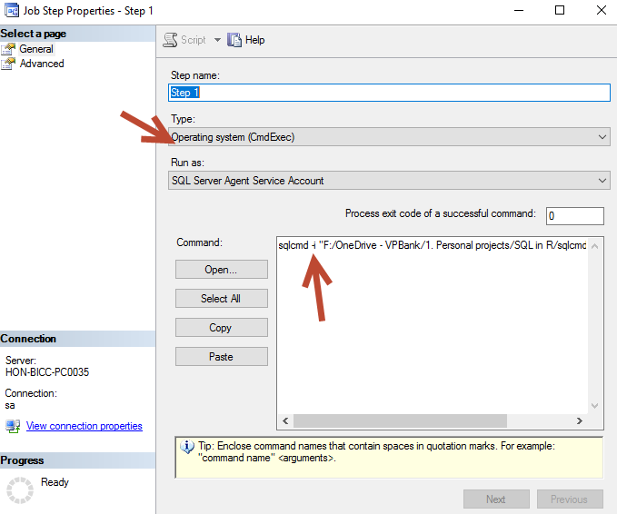
6.1. SQLCMD là gì?#
6.2. CMD#
CMD (Command Prompt) là một ứng dụng dùng để thực thi các lệnh có sẵn trong Windows. Những lệnh này được sử dụng trên một giao diện nhập lệnh thay vì thao tác trực tiếp trên giao diện Windows.
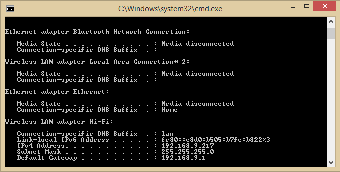
6.3. SQLCMD#
SQLCMD là một công cụ đi kèm với SQL Server, cho phép ta thực hiện :
Các câu lệnh truy vấn
Stored Procedure
Chạy các file SQL Script có sẵn
bằng cách sử dụng các dòng lệnh của ứng dụng CMD.
Khởi động SQLCMD trong SQL Server :
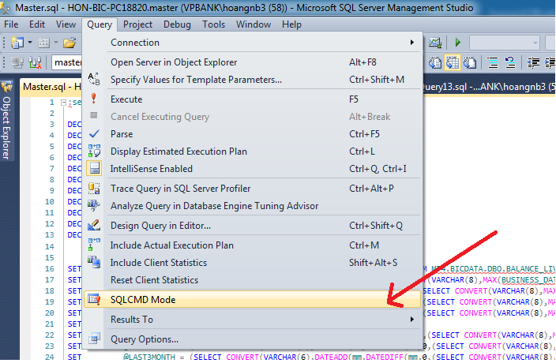
Các bước :
Query
SQLCMD Mode
Sự khác nhau giữa trước và sau khi khởi động SQLCMD trong SQL Server :
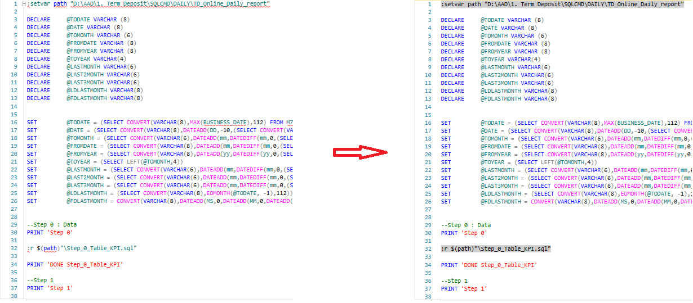
Các dòng lệnh SQLCMD sẽ được bôi nền xám
6.4. Các lệnh trong SQLCMD#
6.4.1. Các lệnh trên nền SQLQuery#
6.4.1.1. :r#
:r <filename>
Mục đích : chạy các file SQL scrip có sẵn
Ví dụ :
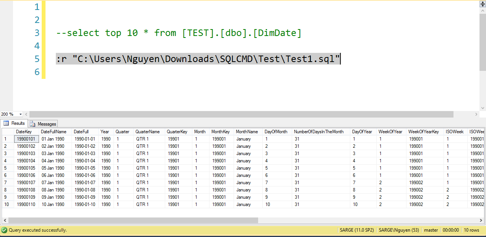
Lưu ý :
Các bảng tạm ở mỗi SQL scrip sẽ được giữ lại trong suốt quá trình chạy các SQL scrip
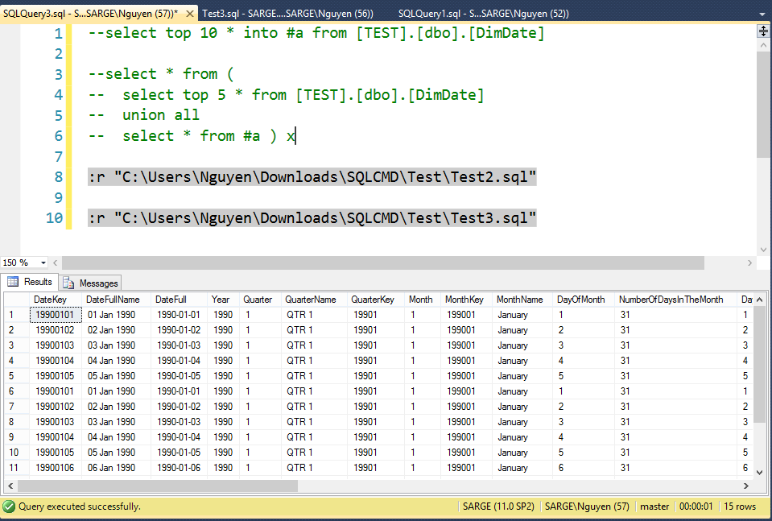
6.4.1.2. :setvar#
Gồm 2 bước :
Tạo biến :setvar <varname> <"value">
Gọi biến :r $(<varname>)
Mục đích :
Ví dụ :
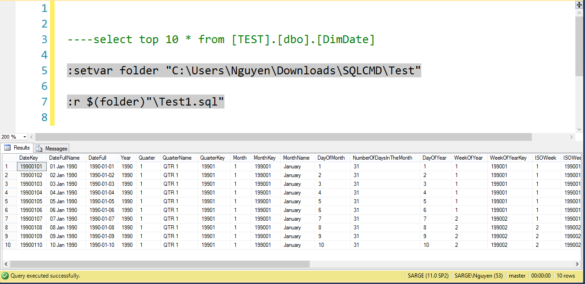
6.4.1.3. :connect#
:connect <server_name> <[-l timeout]> <[-U user_name -P password]>
Trong đó :
server_name : tên server muốn truy cập
l : thời gian để kết nối với server, tính theo (giây), thời gian mặc định : 8s
U : user name
P : password
Mục đích : với những câu lệnh nặng phải query toàn bộ trên 1 server khác, nên đăng nhập server đó để query vào 1 bảng tạm --> sau đó kéo về server của mình.
Ví dụ :
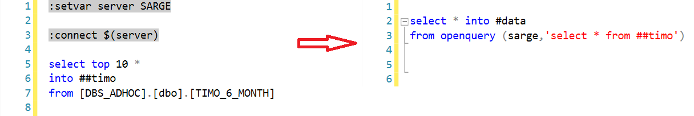
Lưu ý :
Bảng tạm trên server khác cần kéo về có dạng ##
Khi chuyển data về server của mình, không được đóng tab chứa query của bảng tạm
6.4.2. Các lệnh trên CmdExec#
Các bước đặt job sử dụng CmdExec

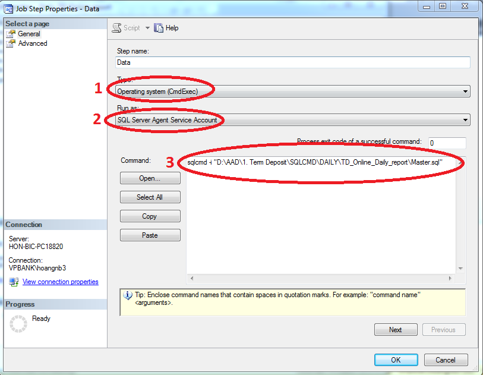
B0: Thực hiện đặt job như thông thường tới bước tạo các Step
B1: Chọn Type : Operating system (CmdExec)
B2: chọn Run as : SQL Server Agent service Account
B3: Viết câu lệnh sqlcmd
6.4.2.1. Các lệnh trên CmdExec#
Cấu trúc
sqlcmd <[-S server_name]> <[-l timeout]> <[-U user -P password]> <[-d database_name]> <-i "input_file"> <"file"> <[-t query_timeout]> <[-o output_file]>
 Trong đó:
Trong đó:
-S server name (default : server hiện tại của máy)
-l login timeout (default = 8s)
-U user login
-P password login (-U và -P là 1 cặp đi cùng nhau)
-d use database name (default = master)
-i input file (nếu đường dẫn có khoảng trống thì cần đặt trong "")
-t query timeout (default = n, nếu gán giá trị thì trong khoảng 1 - 65534s)
-o output file, được xuất ra thư mục chứa input file, gồm các định dạng: .log, .doc, .xls
Ví dụ :
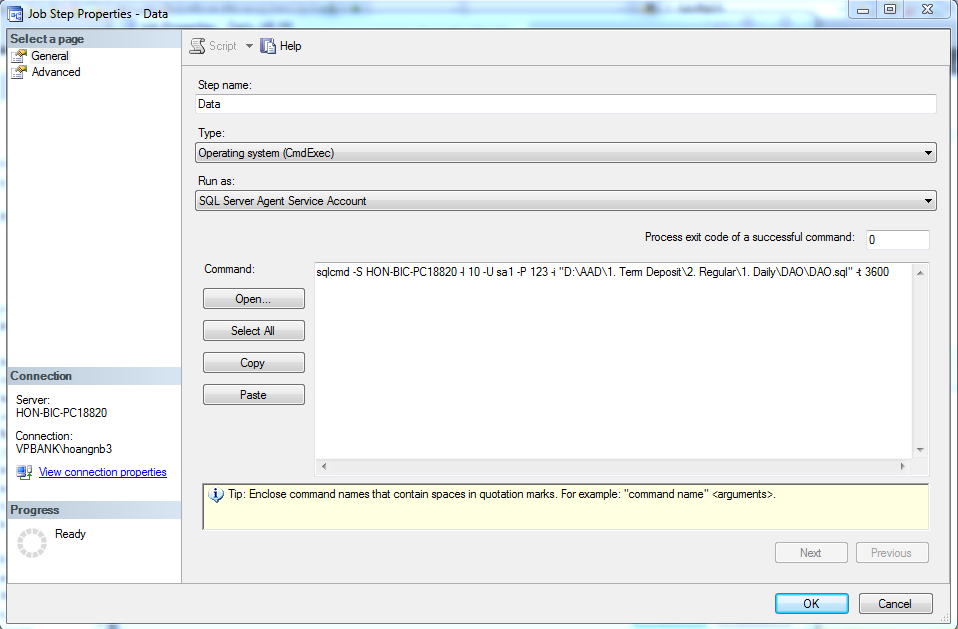
Tìm hiểu thêm về các lệnh : Trên màn hình cmd, nhập lệnh sqlcmd -?
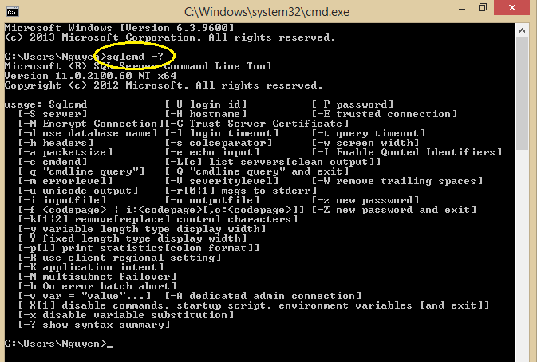
6.5. Tạo file bat#
Mục đích : Có thể nhanh chóng query câu lệnh và xuất dữ liệu
Các bước :
Bước 1: Tạo 1 file Text
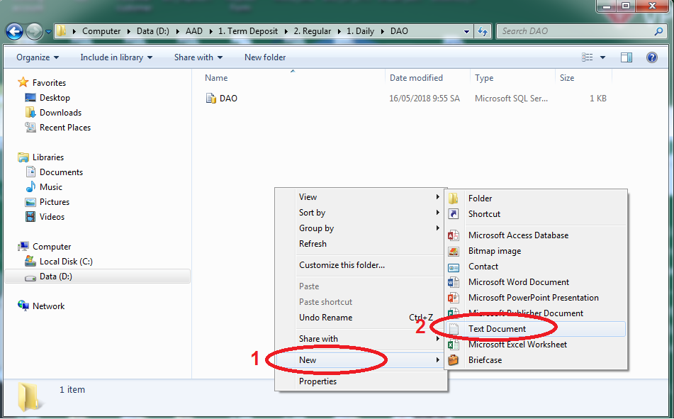
Bước 2 : Copy toàn bộ câu lệnh trong CmdExec vào file Text

Bước 3 : Save as file --> thêm đuôi .bat vào tên file

Bước 4: Double click vào file .bat vừa tạo để chạy câu lệnh